Table Sample : hello world
table/sample_table_hello.js
let table = null;
window.onload = () => {
// SVG要素の取得
const box = document.getElementById("svgbox");
// Tableの作成
table = new GraphTableSVG.Table(box, { x: 50, y: 50, rowCount: 3, columnCount: 3 });
// X : 2, Y : 1 のセルのテキストを変更
table.cells[1][2].svgText.textContent = `Hello World`;
};
table/sample_table_hello.html
<!DOCTYPE html>
<html>
<head>
<meta charset="utf-8" />
<title>Sample</title>
<link rel="stylesheet" href="sample_table.css" type="text/css" />
<!-- GraphTableSVGの実行に必要なスクリプト -->
<script src="../scripts/graph_table_svg.js"></script>
<script src="sample_table_hello.js"></script>
</head>
<body>
<button type="button" onclick="GraphTableSVG.GUI.createMacroModal(GraphTableSVG.SVGToVBA.create(table))">VBA</button>
<button type="button" onclick="GraphTableSVG.PNG.createPNGFromSVG('svgbox')">PNG</button>
<br>
<svg viewBox="0 0 300 300" width="300px" height="300px" id="svgbox" xmlns="http://www.w3.org/2000/svg" style="border:#000000 solid 1px;background:#e9e9e9"></svg>
</body>
</html>
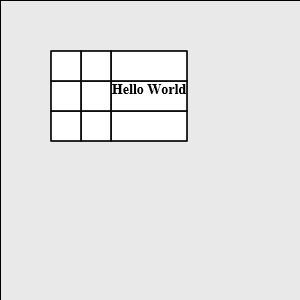
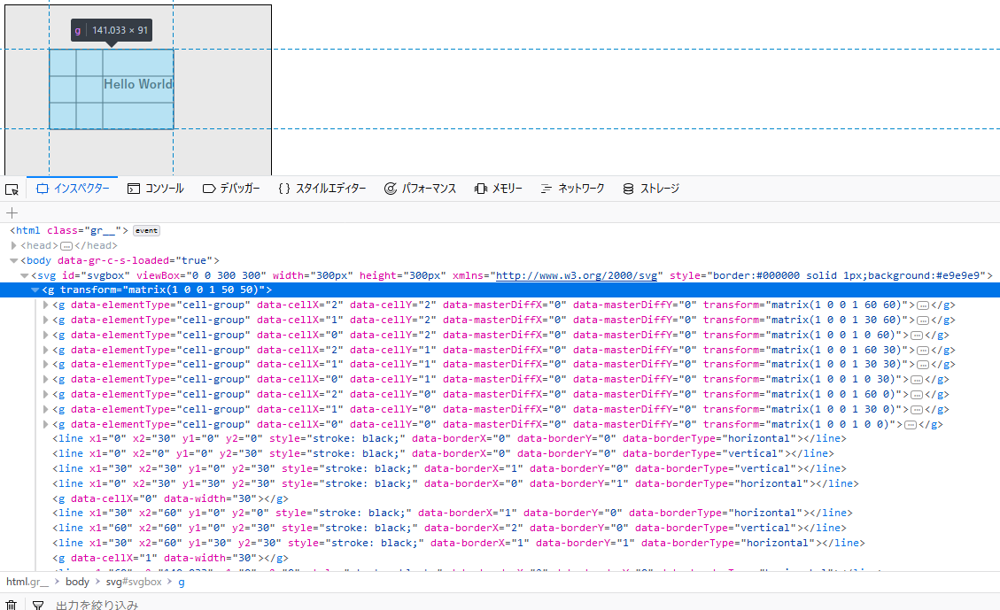
Table Sample : Tableの構成
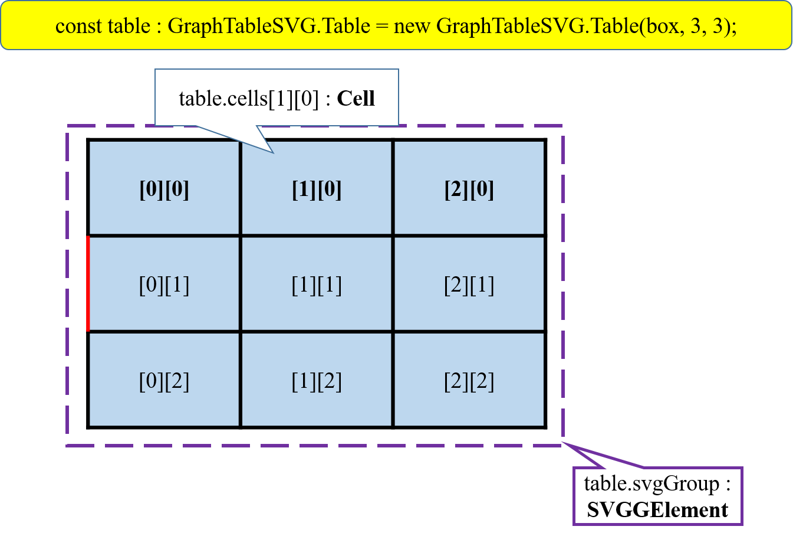
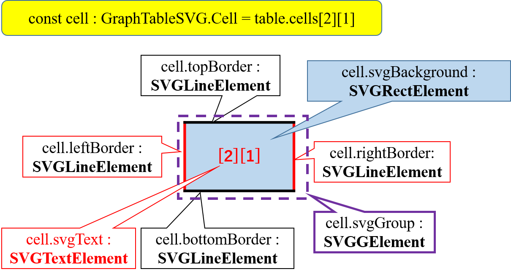
table/sample_table_style.js
let table = null;
window.onload = () => {
const box = document.getElementById("svgbox");
table = new GraphTableSVG.Table(box, { x: 50, y: 50, rowCount: 5, columnCount: 5 });
/* 各セルのテキストの編集 */
for(let y=0;y<table.rowCount;y++){
for(let x=0;x<table.columnCount;x++){
table.cells[y][x].svgText.textContent = `[${y},${x}]`
}
}
/* 各セルのスタイルの編集 */
table.cells[3][2].topBorder.style = "stroke:green;stroke-width:4pt";
table.cells[3][2].svgBackground.style = "fill:aqua";
table.cells[0][0].svgText.style = "stroke:blue";
/* SVG要素はクラス名を設定することでスタイルをCSSファイルで設定することが出来る
けれどスタイルに直書きしているとそちらのほうが優先？されるようなので一旦消している。
*/
table.cells[1][2].topBorder.removeAttribute("style");
table.cells[1][2].topBorder.setAttribute("class","border");
table.cells[1][2].svgBackground.removeAttribute("style");
table.cells[1][2].svgBackground.setAttribute("class","background");
table.cells[3][0].svgText.removeAttribute("style");
table.cells[3][0].svgText.setAttribute("class","text");
/* table.cells[1][1].topBorder.removeAttribute("style");
table.cells[1][1].topBorder.setAttribute("class","border");
と同等
*/
GraphTableSVG.SVG.setClass(table.cells[1][1].svgText,"text");
};
table/sample_table_style.css
body {
font-family: 'Segoe UI', sans-serif;
}
.svgbox {
border: #000000 solid 1px;
background: #e9e9e9;
}
.text {
fill: red;
font-size: 24px;
font-family: 'Times New Roman';
font-weight: bold;
}
.background {
fill: yellow;
}
.border {
stroke:red;
stroke-width: 8pt;
}
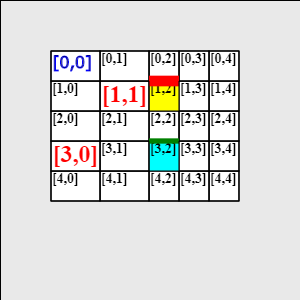
Table Sample : デフォルトクラス名の指定
table/sample_table_style_select.js
let table = null;
window.onload = () => {
const box = document.getElementById("svgbox");
table = new GraphTableSVG.Table(box, { x: 50, y: 50, rowCount: 4, columnCount: 5, tableClassName : "table" });
for(let y=0;y<table.rowCount;y++){
for(let x=0;x<table.columnCount;x++){
table.cells[y][x].svgText.textContent = `[${y},${x}]`
}
}
};
table/sample_table_style_select.css
body {
font-family: 'Segoe UI', sans-serif;
}
.svgbox {
border: #000000 solid 1px;
background: #e9e9e9;
}
.table{
--default-cell-class : cell;
--default-border-class : border;
}
.cell{
--default-background-class : background;
--default-text-class : text;
}
.text {
fill: red;
font-size: 32px;
font-family: 'Times New Roman';
font-weight: bold;
}
.background {
fill: pink;
}
.border {
stroke:blue;
stroke-width: 3pt;
}
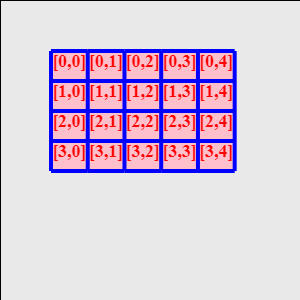
Table Sample : RowとColumn
table/sample_table_width.js
let table = null;
window.onload = () => {
const box = document.getElementById("svgbox");
table = new GraphTableSVG.Table(box, { x: 50, y: 50, rowCount: 5, columnCount: 5 });
for(let y=0;y<table.rowCount;y++){
for(let x=0;x<table.columnCount;x++){
table.cells[y][x].svgText.textContent = `[${y},${x}]`
}
}
table.rows[1].height = 100;
table.columns[1].width = 100;
table.rows[2].height = 0;
table.columns[2].width = 0;
};
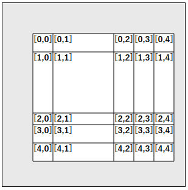
Table Sample : セルの連結
table/sample_table_merge.js
let table = null;
window.onload = () => {
const box = document.getElementById("svgbox");
table = new GraphTableSVG.Table(box, { x: 50, y: 50, rowCount: 10, columnCount: 10 });
for(let y=0;y<table.rowCount;y++){
for(let x=0;x<table.columnCount;x++){
table.cells[y][x].svgText.textContent = `[${y},${x}]`
}
}
//table.cells[2][2]とtable.cells[2][3]を結合
table.cells[2][2].mergeRight();
//table.cells[0][0]とtable.cells[1][0]を結合
table.cells[0][0].mergeBottom();
//table.cells[5][3]とtable.cells[5][4]を結合
table.cells[5][3].mergeRight();
//table.cells[6][3]とtable.cells[6][4]を結合
table.cells[6][3].mergeRight();
//table.cells[5][3-4]とtable.cells[6][3-4]を結合
table.cells[5][3].mergeBottom();
//Error
//table.cells[5][3].mergeRight();
//table.cells[3-4][6-8]を結合
table.cells[3][6].merge(3,2);
};
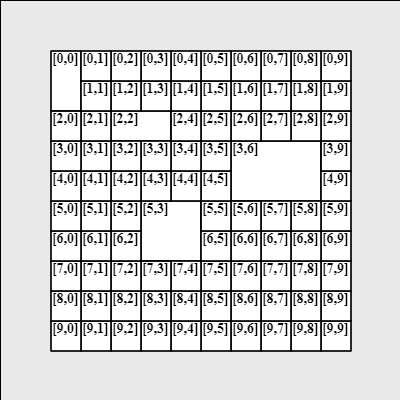
Table Sample : テキスト位置の指定
table/sample_table_anchor.js
let table = null;
window.onload = () => {
const box = document.getElementById("svgbox");
table = new GraphTableSVG.Table(box, { x: 50, y: 50, rowCount: 5, columnCount: 5, rowHeight : 60, columnWidth : 60 });
for(let y=0;y<table.rowCount;y++){
for(let x=0;x<table.columnCount;x++){
table.cells[y][x].svgText.textContent = `[${y},${x}]`
}
}
GraphTableSVG.SVG.setClass(table.cells[1][1].svgGroup, "cell_L");
GraphTableSVG.SVG.setClass(table.cells[1][2].svgGroup, "cell_C");
GraphTableSVG.SVG.setClass(table.cells[1][3].svgGroup, "cell_R");
GraphTableSVG.SVG.setClass(table.cells[2][1].svgGroup, "cell_T");
GraphTableSVG.SVG.setClass(table.cells[2][2].svgGroup, "cell_M");
GraphTableSVG.SVG.setClass(table.cells[2][3].svgGroup, "cell_B");
GraphTableSVG.SVG.setClass(table.cells[3][1].svgGroup, "cell_TL");
GraphTableSVG.SVG.setClass(table.cells[3][2].svgGroup, "cell_MC");
GraphTableSVG.SVG.setClass(table.cells[3][3].svgGroup, "cell_BR");
table.cells[4][1].verticalAnchor = "top";
table.cells[4][2].verticalAnchor = "middle";
table.cells[4][3].verticalAnchor = "bottom";
table.cells[4][1].horizontalAnchor = "right";
table.cells[4][2].horizontalAnchor = "center";
table.cells[4][3].horizontalAnchor = "left";
};
table/sample_table_anchor.css
body {
font-family: 'Segoe UI', sans-serif;
}
.svgbox {
border: #000000 solid 1px;
background: #e9e9e9;
}
.cell_T{
--vertical-anchor : top;
}
.cell_M{
--vertical-anchor : middle;
}
.cell_B{
--vertical-anchor : bottom;
}
.cell_L{
--horizontal-anchor : left;
}
.cell_C{
--horizontal-anchor : center;
}
.cell_R{
--horizontal-anchor : right;
}
.cell_TL{
--vertical-anchor : top;
--horizontal-anchor : left;
}
.cell_MC{
--vertical-anchor : middle;
--horizontal-anchor : center;
}
.cell_BR{
--vertical-anchor : bottom;
--horizontal-anchor : right;
}
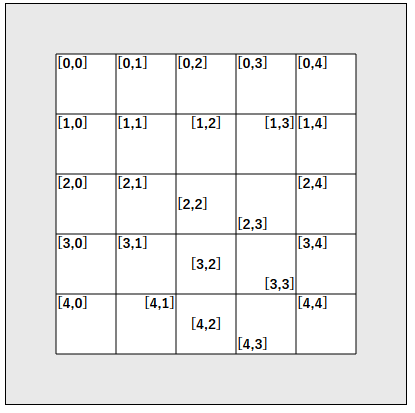
Table Sample : Logic Table
table/sample_table_logic.js
let table = null;
window.onload = () => {
const logicTable = new GraphTableSVG.LogicTable({rowCount : 5, columnCount : 4, x : 50, y : 50});
for(let y=0;y<logicTable.rowCount;y++){
for(let x=0;x<logicTable.columnCount;x++){
logicTable.cells[y][x].set(`[${y}, ${x}]`);
}
}
const box = document.getElementById("svgbox");
table = new GraphTableSVG.Table(box);
table.constructFromLogicTable(logicTable);
const table2 = new GraphTableSVG.Table(box);
table2.construct([["[0,0]","[0,1]","[0,2]"], ["[1,0]","[1,1]","[1,2]"], ["[2,0]","[2,1]","[2,2]"]], {x:250,y:50});
};
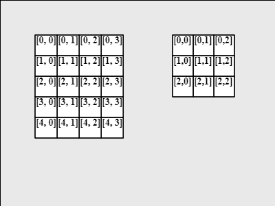
Table Sample : Powerpointへ出力とPNG保存について
table/sample_table_powerpoint.html
<!DOCTYPE html>
<html>
<head>
<meta charset="utf-8" />
<link rel="stylesheet" href="sample_table_powerpoint.css" type="text/css" />
<script src="../scripts/graph_table_svg.js"></script>
<script src="sample_table_powerpoint.js"></script>
<title>Sample</title>
</head>
<body>
<button type="button" onclick="GraphTableSVG.GUI.createMacroModal(GraphTableSVG.SVGToVBA.create(table))">VBA</button>
<button type="button" onclick="GraphTableSVG.PNG.createPNGFromSVG('svgbox')">PNG</button>
<br>
<svg viewBox="0 0 400 400" width="400px" height="400px" id="svgbox" xmlns="http://www.w3.org/2000/svg" style="border:#000000 solid 1px;background:#e9e9e9"></svg>
</body>
</html>
table/sample_table_powerpoint.js
let table = null;
window.onload = () => {
const box = document.getElementById("svgbox");
table = new GraphTableSVG.Table(box);
table.construct([["[0,0]","[0,1]","[0,2]"], ["[1,0]","[1,1]","[1,2]"], ["[2,0]","[2,1]","[2,2]"]], {x:50,y:50});
};
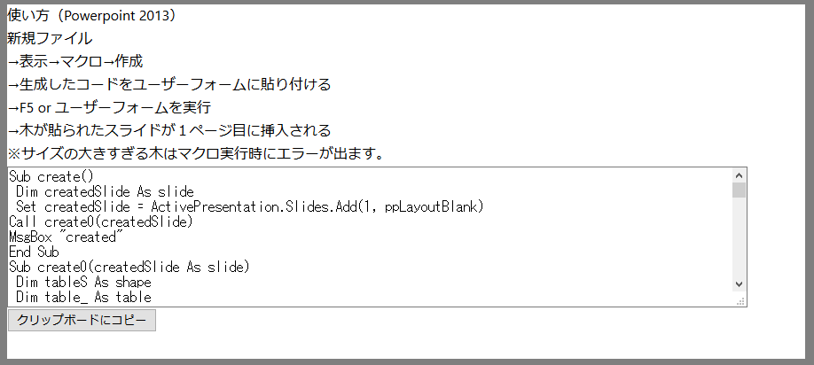
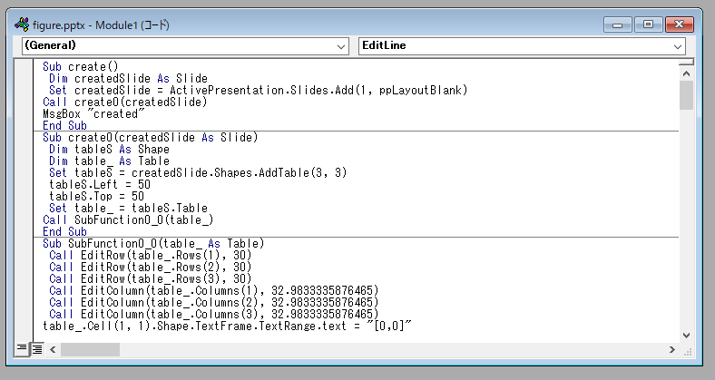
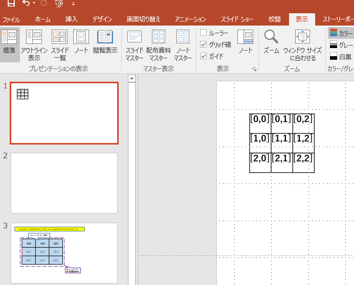
Graph Sample : Hello World
graph/sample_graph_hello.html
<!DOCTYPE html>
<html>
<head>
<meta charset="utf-8" />
<title>Sample</title>
<link rel="stylesheet" href="sample_graph.css" type="text/css" />
<script src="../scripts/graph_table_svg.js"></script>
<script src="sample_graph_hello.js"></script>
</head>
<body>
<button type="button" onclick="GraphTableSVG.GUI.createMacroModal(GraphTableSVG.SVGToVBA.create(graph))">VBA</button>
<button type="button" onclick="GraphTableSVG.PNG.createPNGFromSVG('svgbox')">PNG</button>
<br>
<svg viewBox="0 0 400 200" width="400px" height="200px" id="svgbox" xmlns="http://www.w3.org/2000/svg" class="svgbox">
</svg>
</body>
</html>
graph/sample_graph_hello.js
let graph = null;
window.onload = () => {
//const box = document.getElementById('svgbox');
// graphの作成
graph = GraphTableSVG.createShape('svgbox', 'g-graph');
//graph = new GraphTableSVG.Graph(box);
// vertexの作成
const vertex = GraphTableSVG.createShape(graph, 'g-ellipse', {cx : 100, cy : 100, text : "hello world"});
//const vertex = GraphTableSVG.Vertex.create(graph, {x:100, y:100});
//vertex.svgText.textContent = "hello world";
};
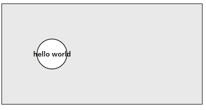
Graph Sample : Edge
graph/sample_graph_edge.js
let graph = null;
window.onload = () => {
graph = GraphTableSVG.createShape('svgbox', 'g-graph');
const vertex1 = GraphTableSVG.createShape(graph, 'g-rect', {cx : 150, cy : 100, text : "1", id:"vertex1"});
const vertex2 = GraphTableSVG.createShape(graph, 'g-rect', {cx : 100, cy : 200, text : "2", id:"vertex2"});
const vertex3 = GraphTableSVG.createShape(graph, 'g-rect', {cx : 200, cy : 200, text : "3", id:"vertex3"});
const edge1 = GraphTableSVG.createShape(graph, 'g-line', {beginVertex : "vertex1", endVertex : "vertex2", text : "abcd" });
const edge2 = GraphTableSVG.createShape(graph, 'g-line', {beginVertex : vertex1, endVertex : vertex3 , text : "abcd" });
//const edge1 = GraphTableSVG.Edge.create(graph, {beginVertex : node1, endVertex : node2});
//const edge2 = GraphTableSVG.Edge.create(graph, {text : "abcd"});
//辺と節の接続
//graph.connect(node1, edge2, node3);
//辺のテキストの設定
//edge1.svgTextPath.setTextContent("efgh");
};
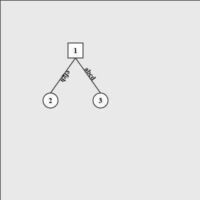
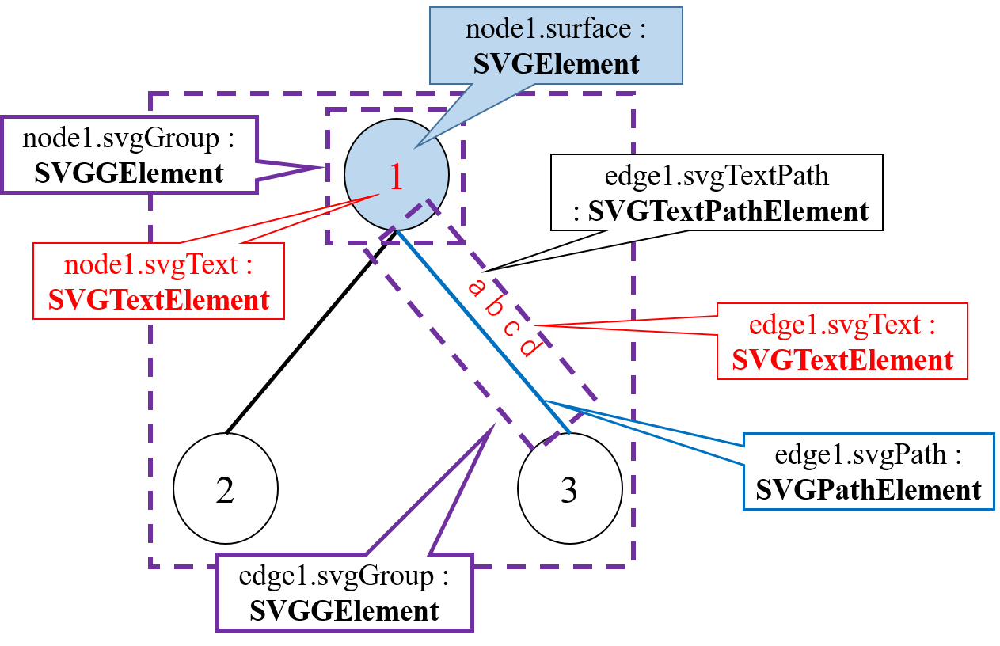
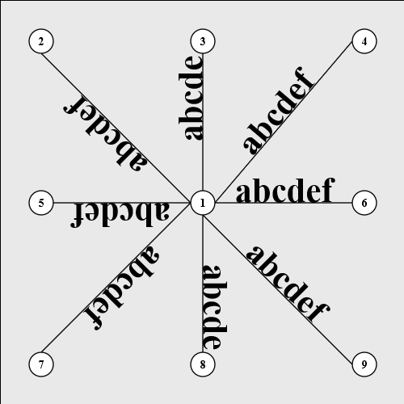
Graph Sample : Vertex and Edge
graph/sample_graph_vertex.js
let graph = null;
window.onload = () => {
graph = GraphTableSVG.createShape('svgbox', 'g-graph');
const vertex1 = GraphTableSVG.createShape(graph, 'g-ellipse', {cx : 100, cy : 100, text : "1", id:"vertex1"});
const vertex2 = GraphTableSVG.createShape(graph, 'g-ellipse', {cx : 150, cy : 200, text : "2", id:"vertex2"});
const vertex3 = GraphTableSVG.createShape(graph, 'g-ellipse', {cx : 50, cy : 200, text : "3", id:"vertex3"});;
const edge1 = GraphTableSVG.createShape(graph, 'g-line', {beginVertex : vertex1, endVertex : vertex2, text : "abcd" });
const edge2 = GraphTableSVG.createShape(graph, 'g-line', {beginVertex : vertex1, endVertex : vertex3 });
/* x:400, y:200の位置に制御点の設定 */
edge1.controlPoint = [[400, 200]];
/* 終了頂点の方向に矢印を作成 */
edge1.markerEnd = GraphTableSVG.Edge.createEndMarker();
/* 開始頂点の方向に矢印を作成 */
edge2.markerStart = GraphTableSVG.Edge.createStartMarker();
};
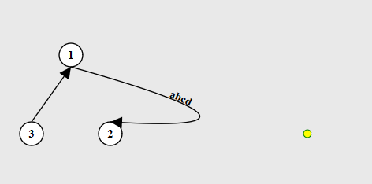
Graph Sample : Connector
graph/sample_graph_connector.js
let graph = null;
window.onload = () => {
graph = GraphTableSVG.createShape('svgbox', 'g-graph');
const connectorTypes = ["top", "topleft", "left", "bottomleft", "bottom", "bottomright", "right", "topright", "auto"];
for(let i=0;i<9;i++){
const vertexL = GraphTableSVG.createShape(graph, 'g-rect' , {cx : 100, cy : (i+1) * 50, text : `${connectorTypes[i]}`, width : 40, height : 40});
const vertexC = GraphTableSVG.createShape(graph, 'g-ellipse', {cx : 200, cy : (i+1) * 50, text : `${connectorTypes[i]}`, width : 40, height : 40});
const vertexR = GraphTableSVG.createShape(graph, 'g-rect' , {cx : 300, cy : (i+1) * 50, text : `${connectorTypes[i]}`, width : 40, height : 40});
const edgeL = GraphTableSVG.createShape(graph, 'g-line');
edgeL.svgPath.style.stroke="red";
/* 接続位置の設定 */
graph.connect(vertexL, edgeL, vertexC, {beginConnectorType : connectorTypes[i], endConnectorType : connectorTypes[i]});
/* create時にも接続位置の設定が可能 */
const edgeR = GraphTableSVG.createShape(graph, 'g-line', {beginVertex : vertexC, endVertex : vertexR, beginConnectorType : connectorTypes[i], endConnectorType : connectorTypes[i]});
edgeR.svgPath.style.stroke="blue";
}
};
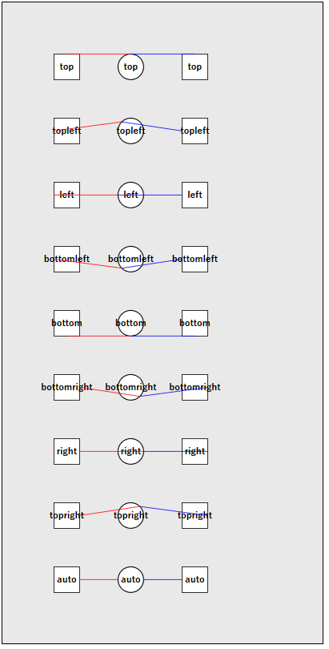
Graph Sample : Class Name
graph/sample_graph_class.js
let graph = null;
window.onload = () => {
graph = GraphTableSVG.createShape('svgbox', 'g-graph', {class : "graph"});
const vertex1 = GraphTableSVG.createShape(graph, 'g-rect', {cx : 100, cy : 100, text : "1"});
const vertex2 = GraphTableSVG.createShape(graph, 'g-rect', {cx : 150, cy : 200, text : "2"});
const vertex3 = GraphTableSVG.createShape(graph, 'g-rect', {cx : 50 , cy : 200, text : "3"});
const edge1 = GraphTableSVG.createShape(graph, 'g-line', {beginVertex : vertex1, endVertex : vertex2 , text : "abcd" });
const edge2 = GraphTableSVG.createShape(graph, 'g-line', {beginVertex : vertex1, endVertex : vertex3 });
};
graph/sample_graph_class.css
body {
font-family: 'Segoe UI', sans-serif;
}
.svgbox {
border: #000000 solid 1px;
background: #e9e9e9;
}
.graph{
--default-vertex-class : vertex;
--default-edge-class : edge;
}
.vertex{
--default-surface-class : surface;
--default-text-class : text-vertex;
--default-surface-type : rectangle;
}
.surface {
stroke: purple;
fill: pink;
--default-radius : 15;
--stroke-style : msoLineDash;
}
.edge{
--default-path-class : line;
--default-text-class : text-edge;
--begin-connector-type : bottom;
--end-connector-type : right;
--marker-start : true;
--marker-end : true;
}
.line{
stroke: blue;
stroke-width: 3pt;
--stroke-style : msoLineSolid;
}
.text-vertex {
fill: red;
font-size: 18px;
}
.text-edge {
fill: green;
font-size: 18px;
}
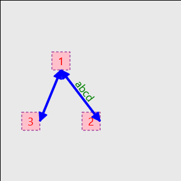
Graph Sample : Alignment
graph/sample_graph_textpath.js
let graph = null;
window.onload = () => {
graph = GraphTableSVG.createShape('svgbox', 'g-graph');
/* 辺上のテキストの配置方法 */
const alignments = ["begin", "end", "center", "regularInterval"]
for(let i=0;i<alignments.length;i++){
const vertex1 = GraphTableSVG.createShape(graph, 'g-rect', {cx : 50 , cy : (i+2) * 50});
const vertex2 = GraphTableSVG.createShape(graph, 'g-rect', {cx : 250, cy : (i+2) * 50});
const vertex3 = GraphTableSVG.createShape(graph, 'g-rect', {cx : 450, cy : (i+2) * 50});
/* pathTextAlignmentで辺のテキストの配置方法を決定 */
const edge1 = GraphTableSVG.createShape(graph, 'g-line', {beginVertex : vertex1, endVertex : vertex2, text : alignments[i], pathTextAlignment : alignments[i] } );
const edge2 = GraphTableSVG.createShape(graph, 'g-line', {beginVertex : vertex2, endVertex : vertex3 , text : alignments[i]});
edge2.controlPoint = [[350, i*50]];
/* pathTextAlignmentはプロパティから設定可能 */
edge2.pathTextAlignment = alignments[i];
}
};
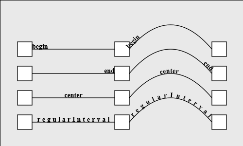
Graph Sample : 破線
graph/sample_graph_dash_style.js
let graph = null;
window.onload = () => {
graph = GraphTableSVG.createShape('svgbox', 'g-graph');
/* 点線の種類 */
const dashStyles = ["msoLineDash", "msoLineDashDot", "msoLineDashDotDot" , "msoLineLongDash" , "msoLineLongDashDot" , "msoLineRoundDot", "msoLineSolid", "msoLineSquareDot"];
for(let i=0;i<dashStyles.length;i++){
const vertexLL = GraphTableSVG.createShape(graph, 'g-rect', {cx : 50 , cy : (i+1) * 50});
const vertexL = GraphTableSVG.createShape(graph, 'g-rect', {cx : 250 , cy : (i+1) * 50} );
const vertexC = GraphTableSVG.createShape(graph, 'g-rect', {cx : 450 , cy : (i+1) * 50});
const vertexR = GraphTableSVG.createShape(graph, 'g-rect', {cx : 700 , cy : (i+1) * 50});
const edgeL = GraphTableSVG.createShape(graph, 'g-line', {beginVertex : vertexLL, endVertex : vertexL});
const edgeC = GraphTableSVG.createShape(graph, 'g-line', {beginVertex : vertexL, endVertex : vertexC, text : dashStyles[i]});
const edgeR = GraphTableSVG.createShape(graph, 'g-line', {beginVertex : vertexC, endVertex : vertexR});
edgeL.svgPath.style.strokeWidth="1px";
edgeC.svgPath.style.strokeWidth="3px";
edgeR.svgPath.style.strokeWidth="6px";
/* 点線の設定 */
GraphTableSVG.msoDashStyle.setStyle(edgeL.svgPath, dashStyles[i]);
GraphTableSVG.msoDashStyle.setStyle(edgeC.svgPath, dashStyles[i]);
GraphTableSVG.msoDashStyle.setStyle(edgeR.svgPath, dashStyles[i]);
}
};
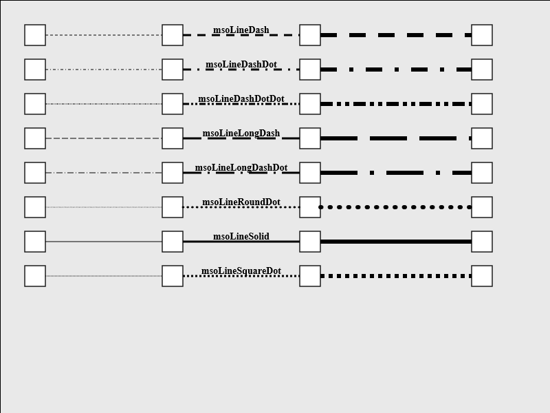
Graph Sample : Tree
graph/sample_graph_tree.js
let graph = null;
window.onload = () => {
graph = GraphTableSVG.createShape('svgbox', 'g-graph');
/* ノードをグラフの根にしたい場合はisRootにTrueを入れるか、graph.roots配列にノードを追加すること */
const vertex1 = GraphTableSVG.createShape(graph, 'g-ellipse', {text : "1"} );
const vertex2 = GraphTableSVG.createShape(graph, 'g-ellipse', {text : "2"} );
const vertex3 = GraphTableSVG.createShape(graph, 'g-ellipse', {text : "3"} );
const vertex4 = GraphTableSVG.createShape(graph, 'g-ellipse', {text : "4"} );
const vertex5 = GraphTableSVG.createShape(graph, 'g-ellipse', {text : "5"} );
const vertex6 = GraphTableSVG.createShape(graph, 'g-ellipse', {text : "6"} );
const vertex7 = GraphTableSVG.createShape(graph, 'g-ellipse', {text : "7"} );
const vertex8 = GraphTableSVG.createShape(graph, 'g-ellipse', {text : "8"} );
const vertex9 = GraphTableSVG.createShape(graph, 'g-ellipse', {text : "9"} );
const vertex10 = GraphTableSVG.createShape(graph, 'g-ellipse', {text : "10"} );
const vertex11 = GraphTableSVG.createShape(graph, 'g-ellipse', {text : "11"} );
const vertex12 = GraphTableSVG.createShape(graph, 'g-ellipse', {text : "12"} );
/*
const node1 = GraphTableSVG.Vertex.create(graph, {text:"1", isRoot : true});
const node2 = GraphTableSVG.Vertex.create(graph, {text:"2"});
const node3 = GraphTableSVG.Vertex.create(graph, {text:"3"});
const node4 = GraphTableSVG.Vertex.create(graph, {text:"4"});
const node5 = GraphTableSVG.Vertex.create(graph, {text:"5"});
const node6 = GraphTableSVG.Vertex.create(graph, {text:"6"});
const node7 = GraphTableSVG.Vertex.create(graph, {text:"7"});
const node8 = GraphTableSVG.Vertex.create(graph, {text:"8"});
const node9 = GraphTableSVG.Vertex.create(graph, {text:"9"});
const node10 = GraphTableSVG.Vertex.create(graph, {text:"10"});
const node11 = GraphTableSVG.Vertex.create(graph, {text:"11"});
const node12 = GraphTableSVG.Vertex.create(graph, {text:"12"});
*/
/* 第一引数のVertexに第二引数のVertexを子として追加する。二点間の辺は自動で作成される */
graph.appendChild(vertex1, vertex2);
graph.appendChild(vertex1, vertex3);
graph.appendChild(vertex3, vertex4);
graph.appendChild(vertex4, vertex5);
graph.appendChild(vertex2, vertex6);
graph.appendChild(vertex2, vertex7);
graph.appendChild(vertex2, vertex8);
graph.appendChild(vertex2, vertex9);
graph.appendChild(vertex8, vertex10);
graph.appendChild(vertex8, vertex11);
graph.appendChild(vertex8, vertex12);
/* 隣り合う頂点間の水平方向の間隔を設定 */
graph.vertexXInterval = 70;
/* 隣り合う頂点間の垂直方向の間隔を設定 */
graph.vertexYInterval = 70;
/* 木の各頂点の配置方法を選択 */
graph.relocateFunction = GraphTableSVG.PPTreeArrangement.alignVerticeByLeave;
document.getElementById("childrenButton").onclick = () => {
graph.relocateFunction = GraphTableSVG.PPTreeArrangement.alignVerticeByChildren;
};
document.getElementById("leaveButton").onclick = () => {
graph.relocateFunction = GraphTableSVG.PPTreeArrangement.alignVerticeByLeave;
};
};
function XYInterval(px, py){
graph.vertexXInterval += px;
graph.vertexYInterval += py;
if(graph.vertexXInterval < 0) graph.vertexXInterval = 0;
if(graph.vertexYInterval < 0) graph.vertexYInterval = 0;
graph.relocate();
}
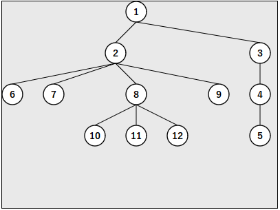
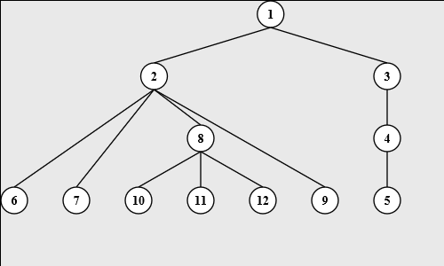
Graph Sample : Logic Tree
graph/sample_graph_logictree.js
let graph = null;
window.onload = () => {
const node1 = new GraphTableSVG.LogicTree({vertexText : "1"});
const node2 = new GraphTableSVG.LogicTree({vertexText : "2"});
const node3 = new GraphTableSVG.LogicTree({vertexText : "3", parentEdgeText : "ho"});
const node4 = new GraphTableSVG.LogicTree({vertexText : "4"});
const node5 = new GraphTableSVG.LogicTree({vertexText : "5"});
const node6 = new GraphTableSVG.LogicTree({vertexText : "6"});
node1.children.push(node2);
node1.children.push(node3);
node3.children.push(node4);
node4.children.push(node5);
node4.children.push(node6);
graph = GraphTableSVG.createShape('svgbox', 'g-graph');
graph.constructFromLogicTree(node1, {x : 50, y : 50});
};
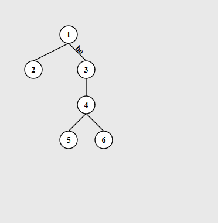